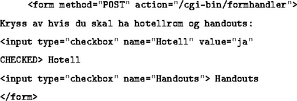
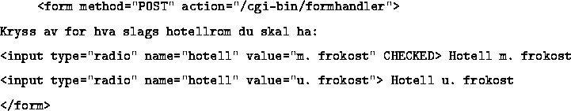
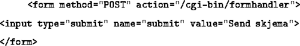
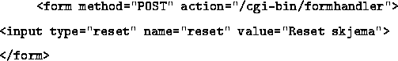

Attributtet checked kan brukes for å ha knappen trykket inn når den dukker opp. Brukes value attributtet, er det dette som sendes til skriptet hvis knappen er trykket inn. I motsatt fall sendes verdien on.

Dette er analogt til avkrysningsbokser, men her er valgene felles utelukkbare. Klikker man inn en knapp, spretter det som alt er valgt ut! Her må value attributtet benyttes.

Knappen må være med, men name og value er valgfritt. Det er lurt å bruk value for å legge en selvvalgt tekst på denne knappen.

Knappen er valgfri, og brukes for å nulle ut informasjonen i et fylt ut skjema. Gjøres dette, dukker skjemaet opp slik det gjorde innledningsvis, evt. med default verdier fyllt inn.